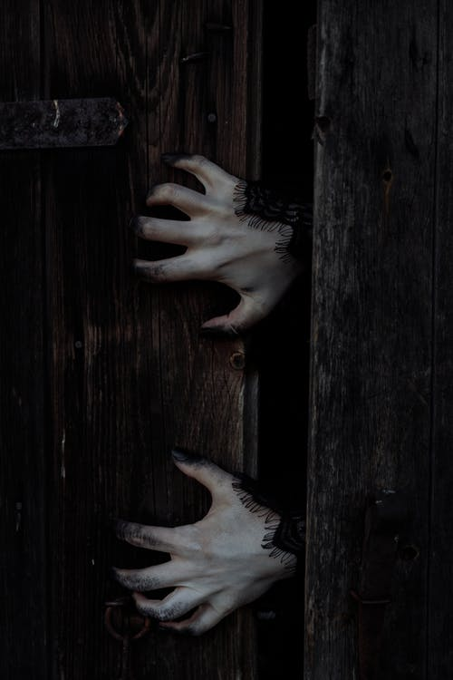

You go back down the path you were originally on as behind you, you hear a small voice call out ‘no, wait’! But it’s too late, you can’t stop now and soon you’re not only lost, but you hear something chase you. You run faster but, oh no!! Your foot gets caught on a tree root and you fall right into some rocks. Your head hurts as red, then black, starts to fill your vision.
"Creepy Hands" by thirdman is marked with CC0 1.0.
Uh oh!